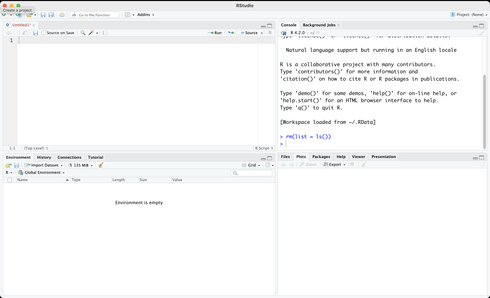
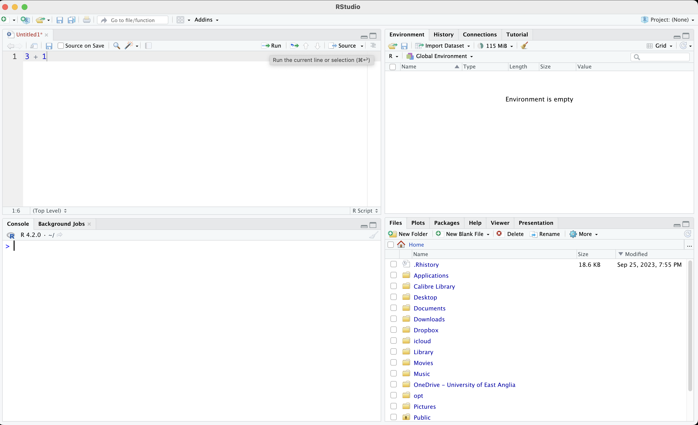

1 + 3
#> [1] 41 R Basics
R is a free software environment for statistical computing and graphics. It is an extremely powerful tool that we will use for data analysis and visualisations.
R Studio is a customization of R. It runs R in the background and comes up with some additional features such as a very nice text editor.

R Studio has four panes:
- Console
- Text editor to work on R scripts
- Environment window
- Plot display
As default, the bottom left pane shows the console. This is where you can type your commands to R. However, we will discourage directly typing into the console. Instead, we will use the text editor, which is located above the console pane. This is where we will type our commands (and also comments). We will then run our code from the text editor. This will allow us to track what we have done. We can easily edit the code if we made a mistake. We can also save the commands for future use.
The upper right pane usually shows the environment by default. This is where our objects such as our data will be shown.
Your environment would not include anything when you first open R Studio. It is the case because we have not imported any data or created any objects.
Finally, the lower right pane displays files/folders, plots (that we will prepare) and help files. We will discuss this pane more in the future.
1.1 Objectives for Week 1
- Use R as a calculator
- Write and execute a command by using R Studio text editor
- Save your script
- Use the assignment operator to create objects
- Understand the difference between ‘string’ and ‘numerical’
- Create a simple dataset
1.2 Use R as a calculator
Go to the console pane and type a simple calculation.

As you can see, the output for 1 + 3 is 4, which is correct. We directly did a calculation using the console.
This would work, but it is not a good approach. Do not write your code directly to the console. Instead, go to the top left pane and write your ‘code’ into the text editor. The calculation 1 + 3 here is your code.
- Save your script by
File >> SaveOR simply by pressing . It is a good idea to create a folder/directory for this module and give your script an intuitive name such as learn_01.R.
1.3 Assignment operator to create objects
We can create objects in R which store our data. For example, you would like to calculate your age. Current year (i.e., 2024) - your birth year gives your age.
Let’s create an object which stores your year of birth. We are going to call it my_birth_year. Each R object must be one-word only, so I use _ instead of space. We could also have used a dot or dash.
# This is a comment.
# Characters after a hashtag are considered as comments by R.
# They are not executed.
# Use comments extensively to take notes
# and to remind your future self of the work you did.
# "<-" is the assignment operator
# It basically symbolizes an arrow.
my_birth_year <- 1985Now the Environment should store an object called my_birth_year. When I run my_birth_year, R will display the information stored.
my_birth_year
#> [1] 1985Note that R is case sensitive. If you mistype, such as My_birth_year, it will give you an error message.
My_birth_year
#> Error in eval(expr, envir, enclos): object 'My_birth_year' not foundWe can find your age by subtracting current year from my_birth_year.
2024 - my_birth_year
#> [1] 39We typed 2024 manually. We might want to create another object called current_year. Try to do it yourself, as an exercise.
Show the code
current_year <- 2024You can do operations using objects. For example, calculate your age using the objects current_year and my_birth_year. Store this in another object called my_age.
my_age <- current_year - my_birth_year Check if you did correctly.
my_age
#> [1] 39You can also write over an object.
current_year <- 2030
current_year
#> [1] 2030This would not change outputs previously created using the older version of the objects.
my_age
#> [1] 39Obviously, current year is not 2030, so let’s correct it back.
current_year <- 20241.4 Numerical and String Objects
So far, we stored numerical data. We can also have textual information, such as name of a person, or type of a medicine.
Create an object called my_name and store your name there.
my_name <- "Baris"
my_name
#> [1] "Baris"As you can see, R displays textual information within quotation (““). Any information stored or displayed within ’’ is called a string and refers to text.
Create an object called my_name_last and store your name there.
my_last_name <- "Ari"Obviously, you cannot make a calculation using words. It is nonsensical to subtract two words. You cannot do any calculation with words.
my_name_last - my_name
#> Error in eval(expr, envir, enclos): object 'my_name_last' not foundSometimes numerical information is stored as text. In that case, R will not consider it as a number. For example, see three objects below.
num1 <- 10
num2 <- 100
num3 <- "1000"num1 and num2 are numerical values, but num3 is text. You cannot do any calculation with that.
num1
#> [1] 10
num2
#> [1] 100
num3
#> [1] "1000"
num1 + num2
#> [1] 110
num1 + num3
#> Error in num1 + num3: non-numeric argument to binary operator1.5 Create a simple dataset
Imagine that we have the names and birth years of a number of people. We cannot really hold each piece of information in separate objects. We would like to store them altogether in a single object, like a spreadsheet.
Let’s start with names. We have eight people:
- Keir Starmer
- Rishi Sunak
- Liz Truss
- Boris Johnson
- Theresa May
- David Cameron
- Gordon Brown
- Tony Blair
We can store their full names in a single object using the combine function c().
names_pm <- c("Keir Starmer",
"Rishi Sunak",
"Liz Truss",
"Boris Johnson",
"Theresa May",
"David Cameron",
"Gordon Brown",
"Tony Blair")Note that each PMs name is written within quotation and they are combined together with the function c(). Each item within c() is separated with a comma. Let’s see the object:
names_pm
#> [1] "Keir Starmer" "Rishi Sunak" "Liz Truss" "Boris Johnson"
#> [5] "Theresa May" "David Cameron" "Gordon Brown" "Tony Blair"Great! We have the names of the last six UK PMs.
You may have realized that there are numbers in squared brackets in the beginning of each line.
These numbers refer to the order in the sequence. For example, “Keir Starmer” is the first item whereas “Theresa May” is the fifth.
You can recall a particular item in the object using square brackets. Let’s print the first item in names_pm.
names_pm[1]
#> [1] "Keir Starmer"Similarly, for the third item, you would use [3]:
names_pm[3]
#> [1] "Liz Truss"Find the fifth name in the object.
names_pm[5]
#> [1] "Theresa May"You can add more than one number into the square brackets using the c() function. For example, who are the second and fourth names?
names_pm[c(2,4)]
#> [1] "Rishi Sunak" "Boris Johnson"Next, let’s write down their birth year. The order is important! You need to keep the same order with PMs.
birth_years <- c(1962, # Keir Starmer
1980, # Rishi Sunak
1975, # Liz Truss
1964, # Boris Johnson
1956, # Theresa May
1966, # David Cameron
1951, # Gordon Brown
1953 # Tony Blair)
)Check the object we just created.
birth_years
#> [1] 1962 1980 1975 1964 1956 1966 1951 1953Let’s put them together in a spreadsheet. What we would like to do is to vertically bind the two objects, which is called column bind and denoted with cbind().
cbind(names_pm, birth_years)
#> names_pm birth_years
#> [1,] "Keir Starmer" "1962"
#> [2,] "Rishi Sunak" "1980"
#> [3,] "Liz Truss" "1975"
#> [4,] "Boris Johnson" "1964"
#> [5,] "Theresa May" "1956"
#> [6,] "David Cameron" "1966"
#> [7,] "Gordon Brown" "1951"
#> [8,] "Tony Blair" "1953"So far, we just printed this on our screen but we have not stored it in an object. Put this into an object.
my_data <- cbind(names_pm, birth_years)Check my_data.
my_data
#> names_pm birth_years
#> [1,] "Keir Starmer" "1962"
#> [2,] "Rishi Sunak" "1980"
#> [3,] "Liz Truss" "1975"
#> [4,] "Boris Johnson" "1964"
#> [5,] "Theresa May" "1956"
#> [6,] "David Cameron" "1966"
#> [7,] "Gordon Brown" "1951"
#> [8,] "Tony Blair" "1953"Note that birth_years are stored as text, not numbers. I know this because they are within quotation marks.
It is customary to keep spreadsheets as something called “data frames” in R. This will not change our data, but makes further operations easier by unlocking some of the features of R.
my_data <- as.data.frame(my_data)We can take a better look at the dataset using View() function.
View(my_data)Let’s save our script.
1.5.1 Variables in a data frame
Columns in a data frame are also called variables. We have two variables in the dataset:
- names_pm : Name of the UK PM
- birth_years: Birth year of the PM
There are a few ways to access a variable. A straightforward approach is to use the $ notation:
# 'name of the data frame'$'name of the variable'
my_data$names_pm
#> [1] "Keir Starmer" "Rishi Sunak" "Liz Truss" "Boris Johnson"
#> [5] "Theresa May" "David Cameron" "Gordon Brown" "Tony Blair"Now it is your turn. Display the birth_years variable.
my_data$birth_years
#> [1] "1962" "1980" "1975" "1964" "1956" "1966" "1951" "1953"You can think this expression as a sentence in R. In plain English, this expression tells R to bring the variable names_pm within the data frame my_data. The symbol $ refers to the ‘within’ part of this sentence.
Just like you can convey the same meaning using different sentence structures, there are different ways to do the same thing in R. This is because R is working exactly like a language: it is a language to communicate with the computer.
Another way is using the square brackets notation []. names_pm is the first column in the data frame. To get the variable, you could type the following:
my_data[,1]
#> [1] "Keir Starmer" "Rishi Sunak" "Liz Truss" "Boris Johnson"
#> [5] "Theresa May" "David Cameron" "Gordon Brown" "Tony Blair"Note that we did not simply write my_data[1]. There is a comma: my_data[,1]
In a spreadsheet, we have two dimensions: rows and columns. By convention, rows are considered as the first dimension, and columns are considered as the second. This is why we had to use a comma to designate that we are interested in columns. If left the first dimension unspecified, which tells R to bring everything.
If you want to get the first row, you would type the following:
my_data[1, ]
#> names_pm birth_years
#> 1 Keir Starmer 1962Try it yourself; get the fourth row.
Show the code
my_data[4,]
#> names_pm birth_years
#> 4 Boris Johnson 1964Let’s put these together: you can tell R to bring a specific observation. For example, third row of second column.
my_data[3,2]
#> [1] "1975"You can also ask for multiple items by plugging in the combine function.
my_data[c(3,4), 2]
#> [1] "1975" "1964"Consider the command above. Try to formulate it in plain English. What does it tell to do R?